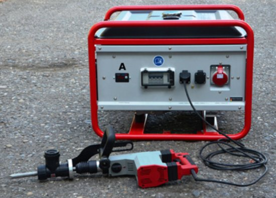
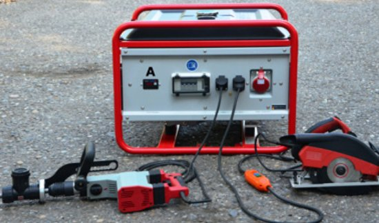
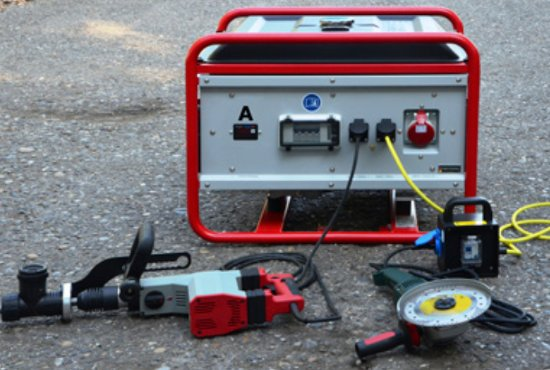
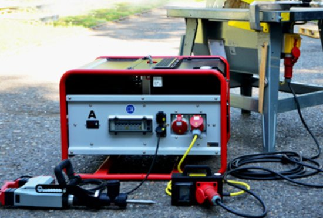
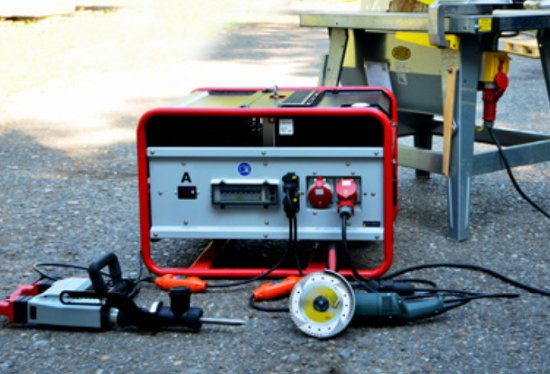
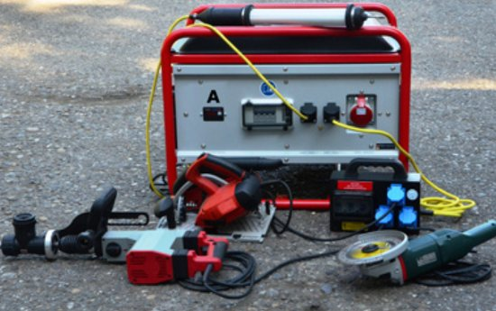
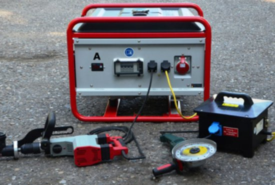
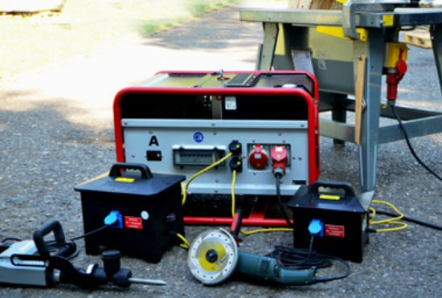

Abb. 20 Ein Betriebsmittel angeschlossen ohne weitere Schutzmaßnahme

Abb. 21 Zwei Betriebsmittel – Abbruchhammer direkt angeschlossen, Säge mit zwischengeschalteter PRCD

Abb. 22 Zwei Betriebsmittel – Abbruchhammer direkt angeschlossen, Winkelschleifer mit zwischengeschalteter RCD in einem Verteiler

Abb. 23 Zwei Betriebsmittel – Abbruchhammer direkt angeschlossen, Baustellenkreissäge mit zwischengeschalteter vierpoliger RCD in einem Verteiler

Abb. 24 Drei Betriebsmittel – Baustellenkreissäge direkt angeschlossen, Abbruchhammer und Winkelschleifer mit jeweils einer zwischengeschalteten PRCD

Abb. 25 Vier Betriebsmittel – Handleuchte direkt angeschlossen, drei weitere Betriebsmittel hinter einem Verteiler mit einer RCD für jede einzelne Steckdose

Abb. 26 Zwei Betriebsmittel – Abbruchhammer direkt angeschlossen, Winkelschleifer hinter zwischengeschaltetem Trenntransformator betrieben

Abb. 27 Drei Betriebsmittel – Baustellenkreissäge direkt angeschlossen, Abbruchhammer und Winkelschleifer hinter jeweils einem Trenntransformator betrieben